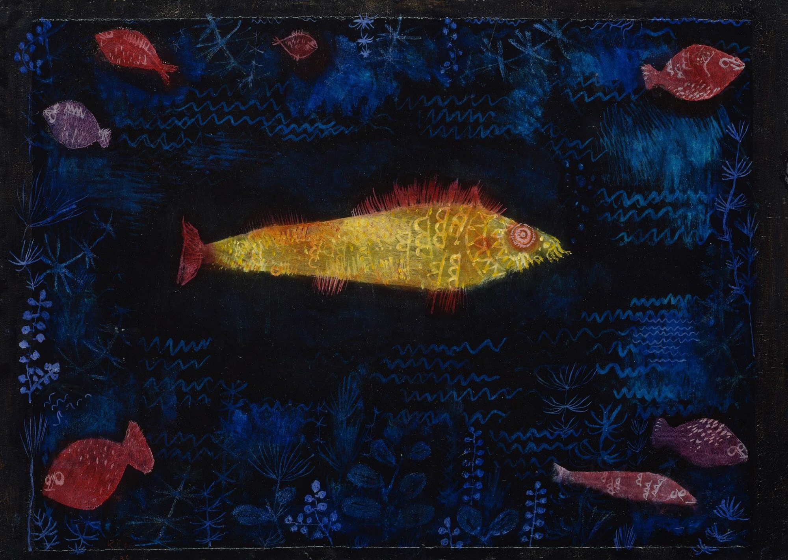

The main fish sits just below center and pushes right. Seven smaller bodies gather along the perimeter. A broad zone of negative space keeps the focal contour clean.
An 80% blue-black field surrounds 20% gold-red warmth. Near complements plus value contrast trigger simultaneous contrast—and the fish appears to glow.
Collection records identify oil and watercolor on paper mounted on board. Washes bloom; oil covers. Dots, curls, short lines, and zigzags turn fish, plants, and currents into visual grammar.
Fact: Klee (1879–1940) taught at the Bauhaus from 1921. Made in 1925, this work is held by Hamburger Kunsthalle.
The sentence above is a viewing perspective by Daily Art, not a quotation from Klee.
Paul Klee, The Goldfish, 1925; oil and watercolor on paper mounted on board, 49.6 × 69.2 cm; Hamburger Kunsthalle, HK-2982. Image: Wikimedia Commons, 2000 × 1422, Public Domain Mark 1.0. Image rights belong to the artist and any applicable rights holders; verify local rules. Appreciation by Daily Art.